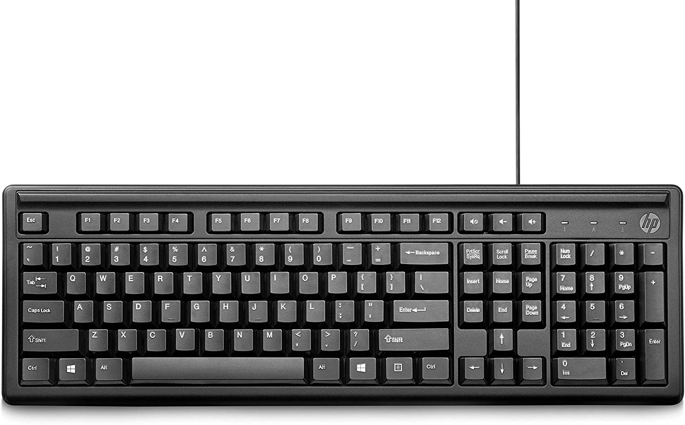
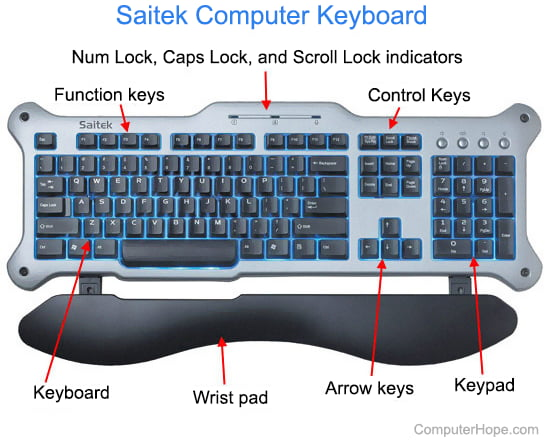

A keyboard is one of the primary input
devices used with a computer. Similar to an electric typewriter, a keyboard is composed of buttons used to
create letters, numbers, and symbols, and perform additional functions. The following sections provide more
in-depth information and answers to some of the frequently asked questions about the keyboard.
- Keyboard overview
- QWERTY keyboard layout
- Keyboard ports and interfaces
- Types of keyboards
- Why is the keyboard an input device?
What are the keyboard rows?
The horizontal rows of character keys have specific names. For example, when placing your hands on the keyboard,
they should be positioned over the home row keys. The keys below the home row are called the bottom row keys, and
above the home row keys are the top row keys.